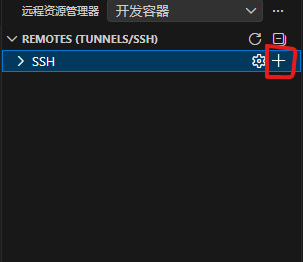
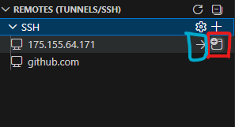
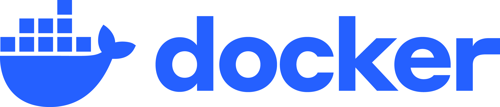
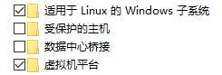
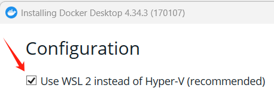

一、租用 GPU 创建 windows 实例训练
以晨涧云平台举例说明：
1. 安装 openSSH server
- 根据平台的控制台给出的 RDP 信息中的电脑名称，本地电脑打开运行输入
mstsc进行远程连接 - 在远程电脑的
设置->系统->可选功能->添加功能，添加 openSSH 服务器，然后以管理员方式打开 powershell，依次运行命令：
# 启动 sshd 服务
Start-Service sshd
# 设置 sshd 为自动启动
Set-Service -Name sshd -StartupType 'Automatic'- 远程电脑以管理员方式运行记事本(
开始菜单->Windows附件)，在记事本中打开C:\ProgramData\ssh\sshd_config这个文件，修改这两项：
# 找到 `#Port 22` 去掉注释号，根据 RDP 信息的预留端口修改数字
Port 8000
# 去掉注释号
PasswordAuthentication yes- 远程电脑再次以管理员方式打开 powershell 输入命令：
# 重启 sshd 服务
Restart-Service sshd
# 防火墙放行 8000 端口
New-NetFirewallRule -DisplayName "SSH on 8000" -Direction Inbound -Protocol TCP -LocalPort 8000 -Action Allow2. 本地电脑安装Filezilla client传输文件
- 安装 Filezilla 完成后打开 FileZilla，点击左上角“站点管理器”新建一个站点。按 RDP 信息填写：
协议：选择 SFTP - SSH File Transfer Protocol
主机：电脑名称(服务器ip)
端口：预留端口-外网
登录类型：正常
用户：电脑用户名(admin)
密码：电脑密码
点击“连接”，出现主机密钥指纹提示时勾选“总是信任”，确定即可。3.使用本地电脑的 VSCode 完成远程训练（可选）
如果不想一直远程操控屏幕，还可以使用 Remote-SSH 插件，直接在 VSCode 中操作：
- 本地电脑 VSCode 安装 Remote-SSH 插件，新建 SSH 连接：

根据上面 RDP 信息，弹出的命令框中输入
ssh -p xxx admin@xxx.xx.xx.xx回车后会弹出选择更新配置文件，点击第一个路径，会自动生成一个 config 文件
在 config 文件配置完成并保存后，等待远端下载 VSCode server。完成后在 VSCode 的远程资源管理器中已经出现刚配置的远程服务器，此时点击红框按钮连接即可(红色创建新窗口，蓝色当前窗口)

- VSCode 会自动进行远程端的设置，窗口上方的中间位置会出现选择平台、输入密码设置，按照自己的情况填写即可
最后使用实例的环境或者与本地电脑一样自己配置环境，就能开始训练
二、租用 GPU 创建 Linux 实例训练
1. docker 配置深度学习环境
通过写 dockerfile 文件创建 docker 镜像，我们可以将配置好的深度学习环境快捷地部署于各台电脑，或上传云 GPU 服务器
1.1 相关知识
docker 是一个容器化技术，由虚拟机技术发展而来，给应用程序封装独立的运行环境，“编写一次，到处运行”是核心优势。 Conda 用于管理 python 相关的库，为不同项目创建隔离环境用来隔离不同版本的 python 库，所以如果没有“到处运行”的需求，则可以不使用 docker
docker 需要基于已存在的 linux 内核，docker 的镜像（image）可以将应用程序及其所有依赖（包括操作系统、运行时环境、配置文件等）打包到一个独立的、可移植的单元中,保证环境一致不出错。
一个 image 可创建有多个容器实例（可以类比于以类创建实例），各个容器互相隔离。 运行容器的计算机称为宿主机，docker 容器之间共用一个系统内核，而每个虚拟机都包含一个操作系统的完整内核，这是与虚拟机的区别之处。

1.2 安装 docker
(1) 因为 docker 需要基于已存在的 linux 内核，安装 docker 前需要启用 Windows 的 WSL2，下面方式2选1：
a)控制面板->程序->启用或关闭 Windows 功能 或 使用 Windows 的搜索输入“启用或关闭 Windows 功能”， 勾选下图的选项（不用勾选 hyper-V，这是虚拟机技术）

b)管理员运行 powershell 终端，根据Windows官方给的命令直接安装 WSL2
wsl --list --online # 查看 linux 分发版列表
wsl --install --no-distribution # 不安装 Ubuntu 分发，可以在微软商店直接下载，但速度可能很慢
wsl --install -d Ubuntu-22.04 # 看显卡选版本(2) 安装docker的两种方式：
a)访问docker官网选择下载 “docker desktop for Windows - AMD64” 并运行，可以安装在其他盘。 安装过程注意勾选 WSL2 instead of Hyper-V

安装完成在 docker 的 settings->Resources->WSL integration 中勾选上 ubuntu 内核点击 apply
在 settings->docker engine 修改设置代码，配置镜像加速以及其他
{
"builder": {
"gc": {
"defaultKeepStorage": "20GB",
"enabled": true
}
},
"default-runtime": "nvidia",
"experimental": false,
"registry-mirrors": [
"https://docker.1ms.run"
"https://docker.xuanyuan.me"
"https://docker-0,unsee.tech/"
"https://hub.geekery.cn",
"https://hub-mirror.c.163.com",
"https://docker.mirrors.ustc.edu.cn",
"https://docker.m.daocloud.io",
],
"runtimes": {
"nvidia": {
"path": "nvidia-container-runtime",
"runtimeArgs": null
}
}
}b)如果 docker desktop 出现 bug，也可以通过指令在 ubuntu 上安装 docker
(3) 进入 Ubuntu 终端，创建用户名与密码
1.3 编写dockerfile
(1) 指令详解
| 指令 | 说明 | 示例 |
|---|---|---|
| FROM | 指定基础镜像，必须是第一条指令 | FROM ubuntu:20.04 |
| WORKDIR | 设置工作目录，后续指令在此目录执行 | WORKDIR /app |
| COPY | 复制文件/目录到镜像中 | COPY . /app |
| ADD | 复制文件到镜像中，支持URL和自动解压 | ADD app.tar.gz /app |
| RUN | 在构建时执行命令 | RUN apt-get update |
| CMD | 容器启动时的默认命令 | CMD ["python", "app.py"] |
| ENTRYPOINT | 容器启动时的入口点，不会被覆盖 | ENTRYPOINT ["./start.sh"] |
| ENV | 设置环境变量 | ENV APP_ENV=production |
| EXPOSE | 声明容器监听端口 | EXPOSE 8080 |
| VOLUME | 声明挂载点 | VOLUME /data |
| ARG | 定义构建参数 | ARG VERSION=1.0 |
| USER | 指定运行用户 | USER appuser |
| LABEL | 添加镜像信息 | LABEL maintainer="you@example.com" |
2. dockerfile示例
拉取基础镜像，安装必要工具和 miniconda or minimerge 后，修改 conda 安装源并创建 conda 环境，再修改 pip 源。创建Project 文件夹为了挂载项目文件夹。torch 与项目相关包进入容器再安装
有博主总结了几套不想动脑的“黄金配置”，可以参考：
前沿性能组 (RTX 50/40系)：
搭配：Python 3.11 + PyTorch 2.5/2.6 + CUDA 12.4+
理由：发挥新架构 (FP8 等) 极致性能，必须拥抱 CUDA 12。主流稳定组 (RTX 30/40系)：
搭配：Python 3.10 + PyTorch 2.3/2.4 + CUDA 12.1
理由：市面上绝大多数开源项目都能跑，兼容性最佳。经典兼容组 (RTX 20/30系)：
搭配：Python 3.9/3.10 + PyTorch 2.0 + CUDA 11.8
理由：CUDA 11.8 是过去几年的统一度量衡，极其稳定。
# NVIDIA CUDA 官方镜像
FROM nvidia/cuda:12.1.0-cudnn8-runtime-ubuntu20.04
LABEL maintainer="journey<journeybegin@qq.com>"
LABEL description="CUDA12.1_cuDNN8_Miniconda3_Python3.10"
# 创建环境变量，防止安装过程中出现交互式提示
ENV DEBIAN_FRONTEND=noninteractive \
TZ=Asia/Shanghai \
CONDA_DIR=/opt/Miniconda3
WORKDIR /root
# 安装相关工具
RUN sed -i 's/archive.ubuntu.com/mirrors.aliyun.com/g' /etc/apt/sources.list \
&& sed -i 's/security.ubuntu.com/mirrors.aliyun.com/g' /etc/apt/sources.list \
&& apt-get update \
&& apt-get install -y --no-install-recommends \
wget \
ca-certificates \
bzip2 \
libglib2.0-0 \
libgl1 \
tzdata \
&& ln -fs /usr/share/zoneinfo/${TZ} /etc/localtime \
&& echo ${TZ} > /etc/timezone \
&& dpkg-reconfigure --frontend noninteractive tzdata \
&& apt-get clean \
&& rm -rf /var/lib/apt/lists/* /tmp/* /var/tmp/*
# 安装miniconda
RUN wget -O /tmp/miniconda.sh "https://mirrors.bfsu.edu.cn/anaconda/miniconda/Miniconda3-py310_25.9.1-1-Linux-x86_64.sh" \
&& bash /tmp/miniconda.sh -b -p ${CONDA_DIR} \
&& rm /tmp/miniconda.sh \
&& ${CONDA_DIR}/bin/conda clean -afy
ENV PATH=${CONDA_DIR}/bin:${PATH}
# 配置 conda 清华源
RUN conda config --system --set show_channel_urls yes \
&& conda config --system --remove channels defaults || true \
&& conda config --system --add channels https://mirrors.tuna.tsinghua.edu.cn/anaconda/pkgs/main \
&& conda config --system --add channels https://mirrors.tuna.tsinghua.edu.cn/anaconda/pkgs/r \
&& conda config --system --add channels https://mirrors.tuna.tsinghua.edu.cn/anaconda/cloud/pytorch
# 直接使用base环境并配置 pip 清华源
RUN pip config set global.index-url "https://pypi.tuna.tsinghua.edu.cn/simple" \
&& conda clean -afy \
&& rm -rf /root/.cache/pip \
&& printf '\n# Activate conda base environment\nsource "${CONDA_DIR}/etc/profile.d/conda.sh"\nconda activate base\n' >> /root/.bashrc
WORKDIR /Project
CMD ["/bin/bash"]note：
FROM nvidia/cuda:12.1.0-runtime-ubuntu20.04
因为想符合windows习惯并保持精简，从dockerhub拉取nvidia/cuda基础镜像，注意cuda版本。pytorch镜像包含了conda不是miniconda，所以弃用。RUN sed -i 's/archive.ubuntu.com/mirrors.aliyun.com/g' /etc/apt/sources.list
更换apt-get安装源，提升下载速度RUN apt-get install -y --no-install-recommends wegt(bzip2等)
安装必要工具。wget为了安装miniconda，ca-certificates提供 HTTPS 证书验证能力，bzip2提供 .bz2 压缩文件解压能力，miniconda需要。一般目标检测模型的cv2需要libglib2.0-0与libgl1，目标跟踪模型可能是其他工具RUN ln -fs /usr/share/zoneinfo/${TZ} /etc/localtime此命令以及下面的两行是设置时区RUN apt-get clean && rm -rf /var/lib/apt/lists/* /tmp/* /var/tmp/清理下载缓存，保持镜像干净，rm -rf命令比较危险
3. 创建 docker 镜像与容器
3.1 创建镜像
启动 docker desktop，命令行 cmd 进入 Dockerfile 目录，输入
docker build -t cu121-py310-ubuntu20.04 -f Dockerfile不满意标签想改名，输入
docker tag cu121-py310-ubuntu20.04 journeybegin/fordetection:cu121-py310-ubuntu20.04，然后删除旧标签名docker rmi cu121-py310-ubuntu22.04推送镜像至dockerhub，现在 dockerhub 上创建镜像仓库 fordetection，
docker push journeybegin/fordetection:cu121-py310-ubuntu22.04，也可以直接在 docker desktop 上操作清理构建镜像的缓存
docker builder prune -a -f
3.2 创建容器
cmd 输入
docker run -it --gpus all --shm-size=16g -v E:\DeepLearning\DEIM-main:/Project --name DEIM journeybegin/fordetection:cu121-py310-ubuntu22.04创建容器，将项目文件夹挂载到了/Project 中或者 VSCode 安装 dev container 插件，在项目文件新建文件夹和文件：
.devcontainer/devcontainer.json
{
"name": "fordetection-cu121-py310",
"image": "journeybegin/fordetection:cu121-py310-ubuntu22.04",
"workspaceFolder": "/Project",
"mounts": [
"source=${localWorkspaceFolder},target=/Project,type=bind"
],
"runArgs": [
"--name", "torch2.4.1-cu121-py310-ubuntu22.04",
"--gpus", "all",
"--shm-size=16g"
],
"remoteUser": "root",
"customizations": {
"vscode": {
"extensions": [
"ms-python.python",
"ms-python.vscode-pylance",
"ms-toolsai.jupyter"
],
"settings": {
"python.defaultInterpreterPath": "/opt/Miniconda3/envs/original/bin/python",
"python.terminal.activateEnvironment": true,
"terminal.integrated.defaultProfile.linux": "bash"
}
}
}
}点击：帮助->显示所有命令->Dev Containers: Reopen in Container，这样可以使用 vscode 在容器中开发
- 将数据集放进项目文件夹中，最后使用 pip 依次 torch，项目的 requirements.txt 的包，即可训练。可以提前下载 torch 的whl 文件放在项目文件夹中，安装更快